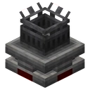

Airship
1 trong những thứ thú vị nhất của create mod là Airship 1 trong những bản mở rộng của create mod
Những thứ cần biết:
Tác dụng của từng vật phẩm
Hot Air Balloon

Có thể dùng bao khí nóng (và loại có trục) để chế tạo khinh khí cầu. Khinh khí cầu phải được bao kín mọi chỗ trừ phần đáy.
Khi khinh khí cầu đủ lớn, nó có thể được sử dụng để điều khiển một thiết bị mô phỏng.
Physics Assembler

Khối lắp ráp vật lý là một khối quan trọng để tạo ra các Cấu trúc mô phỏng. Khi được kích hoạt, các khối được kết nối bằng keo siêu dính hoặc keo mật ong sẽ biến thành một Cấu trúc vật lý (còn được gọi là cấp độ phụ) có thể di chuyển và xoay quanh trong thế giới.
Portable Engine
Một máy phát điện nhỏ, tương tự như Động cơ Lò nung (đã bị loại bỏ trong phiên bản v0.5).
Để kích hoạt động cơ, nhiên liệu phải được nạp bằng tay hoặc bằng phương pháp tự động. Động cơ sẽ hoạt động miễn là vật liệu thường cháy trong lò nung thông thường. Khi hoạt động, động cơ sẽ tạo ra 1024 SU ở tốc độ 32 vòng/phút.
Tham khảo thêm: Create Mod trên CurseForge